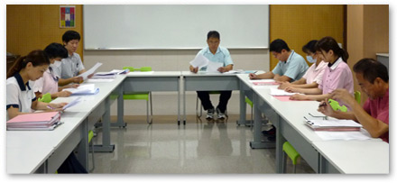
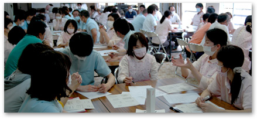

|
苦情解決委員会は、利用者および保護者からの施設生活全般にわたっての苦情、要望に対応していくことで、利用者の生活向上を図ることを目的として発足されました。
利用者、保護者の方々が苦情や要望を言いやすいように全職員が受付係となり、委員会メンバーに報告、速やかな対応を心がけております。
 |
|
安全管理委員会は、福祉施設におけるリスクマネジメントが求められる中、利用者様本位のサービス提供とサービスの質の向上を重点課題として、利用者様と職員等が安全で安心して生活できるよう、医療介護事故防止および防災対策を図ることを目的としている。
各施設において提出されたインシデント報告書および事故報告書の評価を行い、事故の再発防止やハード面の改良など、事故防止対策の具体的内容について検討している。
|
|
社会福祉施設においては各種の災害時に配慮を要する人が入所されており、その防災対策を確立することが強く要求されている。当委員会では特に火災時の対策に重点をおき、各施設が定期的に避難訓練を実施し、常日頃から職員および利用者様の防災に対する意識向上を図っている。具体例として、地域消防署で行われている消火栓･消火器操法大会は、毎年複数名の職員が参加し、消防意識を高めている。
|
ゆうかり学園では、利用者の処遇向上と職員の資質向上を目的に毎週療育会議を実施しているが、その運営を担っている。
 療育会議の内容 |
・ 各施設･各寮カンファレンス
・ 出張報告、研究大会における演題発表
|
 |
|
ＱＣ（Quality Control）は、産業界において品質管理や業務改善の手法として行われているもので、それを福祉に置き換えた手法で行われているのが「福祉ＱＣ」です。
ゆうかり学園では、平成１３年より基礎的な勉強として取り入れ、平成１５年より委員会として発足した。活動は、全職員を対象として「業務改善」「サービスの質の向上」「組織の活性化」等を目的として５～６名ずつのサークル活動を実施している。
|

広報委員会は、施設と地域の架け橋、利用者や家族および地域住民との相互理解、施設や施設サービスのＰＲなどの目的で、広報紙の発行とホームページの管理をしている。
広報紙は1回約1,300部、年間３回発行し、利用者すべてと関連施設や行政機関、地域施設等に配布している。
ホームページは更新が滞りがちだが、できるだけホットなニュースをいち早くお知らせできるよう心がけている。
|
|
職場の衛生管理体制を整備確立するとともに、職員の健康促進を図り、明るく快適な職場環境を形成するために、月1回院内感染対策委員会と一緒に開催。年1回全体研修会を実施。
年1回、ストレスチェック実施し、メンタルについて支援が必要と思われる職員は、産業医の面談へ繋げ、活気ある健全な職場で心身共に健康に過ごせるよう支援している。
|
|
虐待防止委員会は、「障害者虐待防止法」に基づき、利用者様の安全と人権擁護の観点から虐待の防止とその適切な支援を提供することを目的
とし、活動しています。
権利擁護専門委員を設置し、定期的に委員会を開催し、虐待防止を図っています。また、虐待防止啓発の為の、法人全体の研修会や、虐待防止セルフチェックリストを毎年行っています。
個人の尊厳が最大限に尊重され、本人らしい生活が送れるよう、取り組んでいきます。
。
|